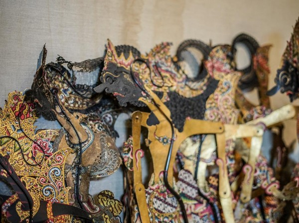

Wayang Kulit

Wayang Kulit
Wayang Golek
Wayang Wong
Wayang Bambu

Wayang (berasal dari Jawa yang artinya "bayangan") adalah seni pertunjukkan tradisional asli Indonesia yang berasal dan berkembang pesat di pulau Jawa dan Bali. UNESCO, lembaga yang membawahi kebudayaan dari PBB, pada 7 November 2003 menetapkan wayang sebagai pertunjukan boneka bayangan tersohor dari Indonesia, sebuah Warisan Mahakarya Dunia yang Tak Ternilai dalam Seni Bertutur (bahasa Inggris: Masterpiece of Oral and Intangible Heritage of Humanity). Sampai saat ini, catatan awal yang bisa didapat tentang pertunjukan wayang berasal dari Prasasti Balitung pada Abad ke 10. Pada tahun 903 M, prasasti yang disebut Prasasti Balitung (Mantyasih) diciptakan oleh Raja Balitung dari Dinasti Sanjaya, dari Kerajaan Medang Kuno. Mereka menyatakan Si Galigi Mawayang Buat Hyang Macarita Bimma Ya Kumara, yang artinya 'Galigi mengadakan pertunjukan wayang untuk dewa dengan mengambil kisah Bima Kumara'. Tampaknya fitur-fitur tertentu dari teater boneka tradisional telah bertahan sejak saat itu. Galigi adalah seorang artis keliling yang diminta untuk tampil untuk acara kerajaan yang istimewa. Pada acara itu ia menampilkan cerita tentang pahlawan Bima dari Mahabharata.
Dalam dunia yang kaya akan budaya dan mitologi, tokoh-tokoh wayang Indonesia menjadi cerminan yang mengagumkan dari kebijaksanaan, keberanian, dan keindahan warisan nenek moyang kita. Temukan kisah-kisah mereka yang mendalam dan inspiratif disini. Setiap halaman adalah jendela ke dunia penuh keajaiban wayang yang akan memikat Anda

Permadi, Janaka

Bratasena, Werkudara
Pancali, Yadnyaseni

Tripala
Darmagranti

Puntadewa
Rasakan pesona cerita-cerita wayang, sebuah bagian tak terpisahkan dari budaya Indonesia yang kaya. jelajahi dan nikmati keindahan warisan budaya Indonesia dengan cara yang sederhana dan bermakna.
GALERI
Wayang Nusantara X
X